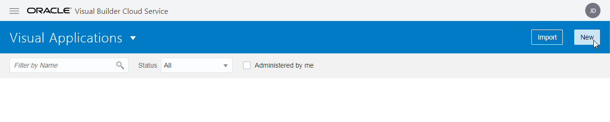
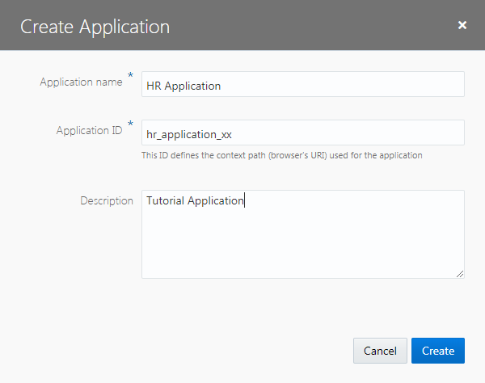
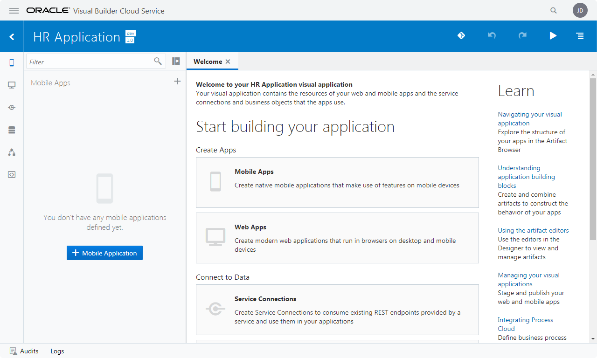

Oracle VBCS はじめての Web アプリケーション開発 > パート1: Web アプリケーションの作成
ビジュアル・アプリケーションの作成
Oracle Visual Builder Cloud Serviceでは最初に、ビジュアル・アプリケーションを作成します。 ビジュアル・アプリケーションは、Webアプリケーションやモバイル・アプリケーションを会はつるために使用するリソースの集まりです。 アプリケーションのソース・ファイルや、メタデータが記述されたJSONファイルを含んでいます。
【ステップ 1】
Web ブラウザを使用して Oracle Visual Builder Cloud Service（以下 VBCS）にログインします。
【ステップ 2】
VBCS の 「Visual Applications」 ページが表示されたら、「New」 ボタンをクリックします。

【ステップ 3】
「Create Application」 ダイアログ・ボックスが表示されます。 表 1-1-1のように設定します。
表 1-1-1: 「Create Application」ダイアログ・ボックスで設定する値
| 設定項目 | 設定する値 | 説明 |
|---|---|---|
| 「Application name」 | HR Application |
アプリケーションにつける名前 |
| 「Id」 | hr_application_<xx> |
アプリケーションのID。アプリケーションの URL にも用いられるので、VBCSのインスタンス内で一意である必要があります。 <xx> の部分はご自身のイニシャルなどと置き換えてください。 |
| 「Description」 | Tutorial Application |
アプリケーションの簡単な説明 |

値を設定したら、「Create Application」 ダイアログ・ボックスの 「Create」 ボタンをクリックします。
ビジュアル・アプリケーションが作成されると、VBCSのアプリケーション・デザイナでビジュアル・アプリケーションがオープンします。 アプリケーション・デザイナにはアーティファクト・ブラウザとWelcomeスクリーンが表示されます。 Welcomeスクリーンには、VBCSでアプリケーションを作成するためのタスクのガイドが表示されます。

アプリケーション・デザイナの左側の領域はアーティファクト・ブラウザと呼ばれる領域で、アプリケーションを構成する各種ソース・ファイル（HTML/CSS/JavaScriptなど）や、データ・アクセスや画面フローの設定などアプリケーションを実行する際に必要となるメタデータ（JSONファイル）が表示され、アクセスできます。
アーティファクト・デザイナには、次のタブ・ページがあります。
- Mobile Applications
- Web Applications
- Service Connections
- Business Objects
- Processes
- Source View
画面上部のアプリケーションの名前（Application nameとして指定したテキスト）の右隣に表示される 「dev」 と 「1.0」 はそれぞれ、アプリケーションのステータス（development: 開発中を表す）とバージョンを表しています。 アプリケーションの左隣に表示される アイコン（Visual Applications）をクリックすると、Visual Applicationsページにナビゲートできます。